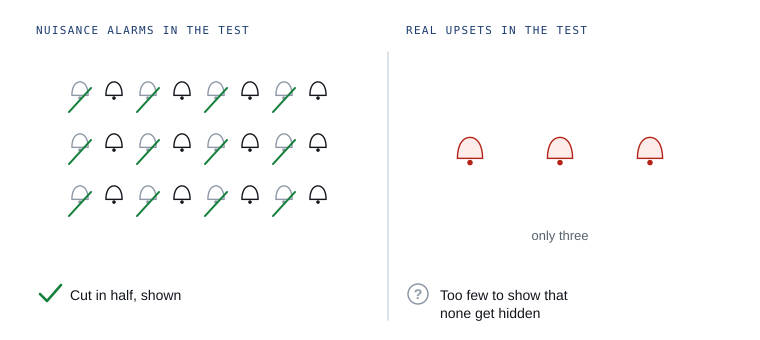

Energy and industry: checking AI claims before you rely on them
For utilities, plants and industrial operators. The Casebook has 3 public cases from energy and industry where an AI error caused harm.
What the AI did
What came of it
What kind of record backs each case
Each case is counted under the record behind it, because a court's finding and a settlement don't prove the same thing. The Casebook names no one and gives no dollar amounts. As of November 23, 2026.
- A finding
- A court, regulator or other official body found it.
- 3
Utilities and plants can already ask for the evidence
These are the rules a utility, plant or federal energy buyer can point to when it asks an AI vendor for evidence.
- Grid supply chain. NERC CIP-013-2, approved by FERC in March 2021, makes covered utilities document and carry out supply chain cybersecurity risk plans for high and medium impact grid cyber systems, including risks from vendors. CIP-013-3 follows, effective July 1, 2028.
- Independent vendor assessments. Implementation guidance in NERC's compliance materials describes a utility using an independent assessment of a vendor's controls as evidence in its CIP-013 plan.
- Process safety. OSHA's process safety standard (29 CFR 1910.119) requires covered employers to manage changes to process technology, run pre-startup safety reviews, and certify a compliance audit at least every three years.
- Nuclear quality assurance. NRC's 10 CFR 50 Appendix B requires design checks by people other than those who did the original design, and audits of quality assurance activities.
- Federal energy purchases. DOE and NNSA Acquisition Letter 2026-05 (May 2026) sets requirements for covered AI purchases, including an AI impact assessment before contract award and a contract clause in covered solicitations.
Where an outside check fits work you already do
- At vendor qualification. Make the vendor's evidence for each claim you'll rely on a required submittal, and have it examined before the vendor is approved. See the sample requirement.
- At a change approval. When an AI tool touches alarm handling, inspection or protection, a finding on the vendor's evidence fits inside your management of change or pre-startup review, scoped to the approved use and version.
- If you insure the plant. An underwriter can ask for a finding on the claims a policy depends on. See the page for insurers.
You can start with a pilot: a first look at one AI product, for a fixed $9,000.
Sources
- NERC CIP-013-2 (nerc.com)
- FERC order approving CIP-013-2, March 18, 2021 (ferc.gov)
- NERC Weekly Regulatory Updates, November 9 to 15, 2026 (nerc.com)
- NATF CIP-013 Implementation Guidance: Using Independent Assessments of Vendors (nerc.com)
- 29 CFR 1910.119 (govinfo.gov)
- 10 CFR Part 50, Appendix B (govinfo.gov)
- DOE and NNSA Acquisition Letter 2026-05 (energy.gov)
What a check could look like in energy and industry
Made up for this page. No real product or company. Each claim gets the same two findings, signed by the examiner and released by a second reviewer.
The claim
"Our alarm triage cuts nuisance alarms in half without hiding real ones."
Finding 1, how far the evidence reaches: Sound, but short of the claim. The vendor replayed six months of one plant's alarm history. It shows the cut in nuisance alarms, but the history had only three real process upsets, too few to back the second half of the claim.
Finding 2, sound evidence the claim is false: None found inside the claim's scope. The evidence is thin exactly where the risk is.

You can require an outside check
If your decision rests on what a vendor says its AI product does, you can make an outside check of that claim a condition of the purchase, the policy or the deal. The report comes only to you.
For buyers and public agencies · For insurers · How it works
Other industries
Government · Policing and courts · Schools · Healthcare · Insurance · Banking and markets · Legal · Transportation · Construction · Hiring and work · News and publishing · AI labs · Software and agents · Customer service